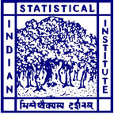

Hello! I'm Jyotishka, a third-year Ph.D. student in Machine Learning at the H. Milton Stewart School of Industrial & Systems Engineering (ISyE), Georgia Tech. I'm a recipient of the Ronald J. and Carol T. Beerman President's Fellowship, starting in Fall 2024. I am very fortunate to be co-advised by Prof. Ashwin Pananjady and Prof. Yao Xie.
My primary research interest lies in the intersection of high-dimensional statistics, machine learning, and optimization. At the moment, I work on high-dimensional change-point detection, and stochastic optimization with incomplete data. In general, I am interested in statistics/ML theory, methodologies, and their sensible applications. Prior to joining Georgia Tech, I have mostly worked on high-dimensional classification (with Prof. Subhajit Dutta), clustering (with Prof. Swagatam Das), and conditional independence testing (with Prof. Eugene Katsevich). Apart from these, I spent the summer of 2022 at IIM Bangalore as a research intern.
Previously, I studied at the Indian Statistical Institute, Kolkata, and graduated from there with a Bachelor of Statistics (B.Stat) degree (with Honours) in 2022, and a Master of Statistics (M.Stat) degree (with Theoretical Statistics specialization) in 2024.
I was born and raised in Birati, a lively suburb on the north side of Kolkata, West Bengal, India. I'm a native Bengali speaker. I do not have a lot of hobbies, but have a firm interest in a bunch of things, including but not limited to science, technology, finance, cooking, football (soccer), table tennis, chess, history, wildlife, languages, high-performance computing, etc. I can read, write, and speak Bengali, Hindi, and English, and I know a little Spanish too.
Education
-
Ph.D. in Machine Learning2024 – presentGeorgia Institute of Technology, Atlanta, USASchool of Industrial & Systems Engineering (ISyE)
-

Master of Statistics (M.Stat)2022 – 2024Indian Statistical Institute, Kolkata, IndiaSpecialization: Theoretical Statistics -
Bachelor of Statistics (B.Stat), Honours2019 – 2022Indian Statistical Institute, Kolkata, India
News
- October 2026 Won the Best Poster Award at Georgia Statistics Day 2026! Here are and some more photos.
- October 2026 Our paper Saddlepoint approximations for plug-in resampling has been accepted at Biometrika.
- October 2026 New preprint: Assumption-lean logistic regression with missing covariates, with Kabir Verchand, Richard Samworth and Ashwin Pananjady.
- September 2026 Gave a talk on high-dimensional robust change-point detection at the CSIP Seminar, Georgia Tech.
- August 2026 Graduate Teaching Assistant for ISyE 3770 at Georgia Tech (Fall 2026).
- June 2026 Gave an invited talk at the International Workshop on Sequential Methodologies (IWSM) 2026 in Washington, D.C., supported by a $500 conference travel award. Here’s the (also on the workshop website).
- May 2026 New preprint: High-Dimensional Robust Change-Point Detection via Angular Kernel Statistics, with Yao Xie.
- September 2025 Featured in an ISyE news story on the Beerman Presidential Fellowship and its recipients.
- August 2025 Our paper on Dirichlet process-based robust clustering appeared at IJCAI 2025; Prof. Swagatam Das presented it in Guangzhou.
- August 2025 Graduate Teaching Assistant for ISyE 6416 and ISyE 7416 at Georgia Tech (Fall 2025).
- August 2024 Started my Ph.D. in Machine Learning at Georgia Tech, with the Ronald J. and Carol T. Beerman President’s Fellowship.